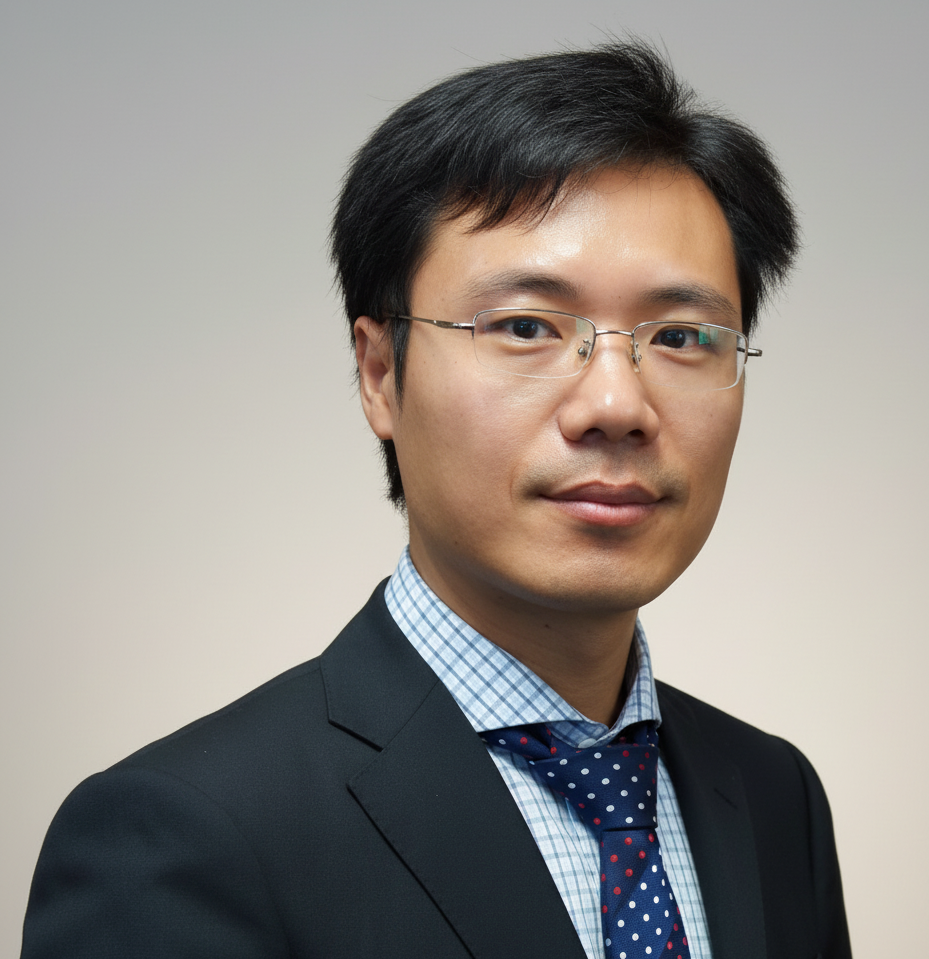

Associate Professor
School of Electromechanical Engineering
Guangdong University of Technology, Guangzhou, China
Email: jsui@gdut.edu.cn
I am an Associate Professor in the School of Electromechanical Engineering at Guangdong University of Technology. I also serve as a key researcher at the Guangdong Key Laboratory of Minimally Invasive Surgical Instruments and Manufacturing Technology and the State Key Laboratory of High Performance Tools.
My research focuses broadly on intelligent minimally invasive surgical instruments, FBG force-sensing mechanisms, and biological tissue-tool interaction mechanics. Specifically, I investigate micro-force feedback systems, femtosecond laser micro-textured surfaces for tissue damage reduction, cable-driven multi-DOF laparoscopic instruments, and orthopedic micro-motion fixators.
For a complete list of publications, please visit my Google Scholar Profile.